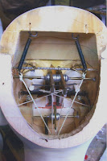
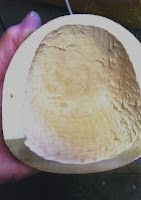

Carving questions
6/16/2009
Question: Being a sculptor, I plan to carve a head for a ventriloquist figure. (I have carved figurines in the past, so the task of carving a head out of wood is not daunting to me, but this will be the first time that I will carve a head which will be hollowed-out and inserted with mechanical parts) Hearing that basswood is often the "wood of choice" for such projects, I am looking for a block of basswood (basic dimensions for the block that I have in mind would be: 8.0" x 8.0" x 16.0". I'm assuming a length that will allow for the full head plus the neck. What would be the overall dimensions for a Size 4 figure's head?) Bruce
* * * * *
Answer: I'm not certain how to help you as I have never personally carved a figure from wood. I know Basswood is the wood of choice because it has very little grain. All the heads I have seen were made from boards ½- 1 inch thick, laminated together to make a block of the proper size. Lovik used a bandsaw to cut out the mouth but that requires regluing some of the head and neck pieces back together. Wood drills and chisels hollow out the inside as needed. The two pictures here show the inside of a wood carved head (basswood) built by Chuck Jackson. Some of the glue seams can be seen where pieces have been glued together. You might also contact Mike Brose at http://www.puppetsandprops.com/ who may sell a book that shows how to carve a figure head and install mechanics. Clinton
{kind=link}

* * * * *
Answer: I'm not certain how to help you as I have never personally carved a figure from wood. I know Basswood is the wood of choice because it has very little grain. All the heads I have seen were made from boards ½- 1 inch thick, laminated together to make a block of the proper size. Lovik used a bandsaw to cut out the mouth but that requires regluing some of the head and neck pieces back together. Wood drills and chisels hollow out the inside as needed. The two pictures here show the inside of a wood carved head (basswood) built by Chuck Jackson. Some of the glue seams can be seen where pieces have been glued together. You might also contact Mike Brose at http://www.puppetsandprops.com/ who may sell a book that shows how to carve a figure head and install mechanics. Clinton
{kind=link}
